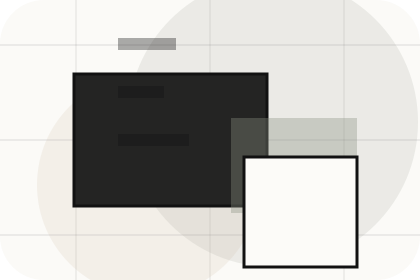
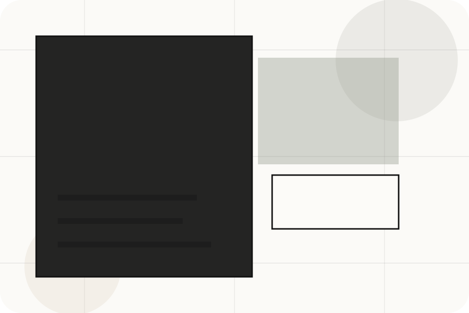
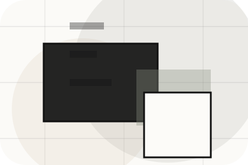
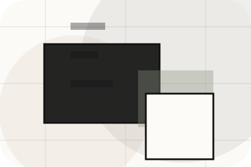
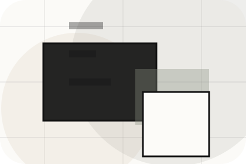
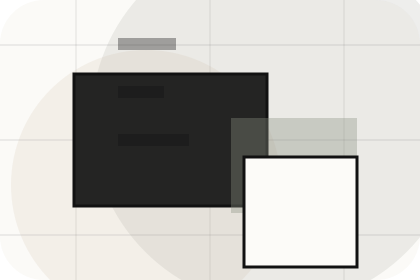
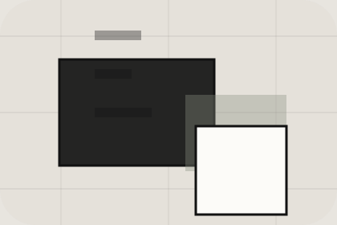

Start
How visitors begin this route and what detail is useful at the first step.
Process / 01
Process opens as a clear real estate decision hub: what Urban offers, who it helps, why it matters, and which route to take first.
The first screen combines positioning, proof, primary action, and fast internal navigation, so people can act immediately or compare the rest of the process route with context.
Architectural listing hero
Select the closest route and Urban keeps the next step, proof, and follow-up expectation aligned with market confidence and discovery.

Process / 02
Valuation explains the operating sequence so visitors can see how the first request becomes a clear recommendation and follow-up.
The steps are written from the visitor side: what they do first, what Urban clarifies, what they receive, and how support continues.
Explore ProcessUrban structures valuation around start, clarify, and a clear next route so visitors can compare the block quickly before they get a valuation.
Get ValuationProcess / 04
Viewings explains the operating sequence so visitors can see how the first request becomes a clear recommendation and follow-up.
The steps are written from the visitor side: what they do first, what Urban clarifies, what they receive, and how support continues.
Explore ProcessHow visitors begin this route and what detail is useful at the first step.
What Urban reviews, filters, or explains before recommending the next move.

What the visitor receives afterward, including support, proof, or a handoff to the next page.
Process / 05
Offers defines the better state Urban is built to create, with enough detail to make the promise believable.
A real-estate editorial site with architecture-led listings, sparse navigation, area guides, and valuation flow. The section grounds that direction in concrete benefits, visible tradeoffs, and a next route visitors can use when the promise feels relevant.
Explore ProcessOffers defines what becomes clearer, easier, or safer when Urban is the chosen route.
The benefit is tied to market confidence and discovery, not a vague quality claim.
Visitors get a linked path to compare the promise against services, standards, or examples.
Process / 06
Negotiation explains the operating sequence so visitors can see how the first request becomes a clear recommendation and follow-up.
The steps are written from the visitor side: what they do first, what Urban clarifies, what they receive, and how support continues.
Explore ProcessHow visitors begin this route and what detail is useful at the first step.
What Urban reviews, filters, or explains before recommending the next move.
What the visitor receives afterward, including support, proof, or a handoff to the next page.
Process / 07
Documents explains the operating sequence so visitors can see how the first request becomes a clear recommendation and follow-up.
The steps are written from the visitor side: what they do first, what Urban clarifies, what they receive, and how support continues.
Explore ProcessUrban structures documents around start, clarify, and a clear next route so visitors can compare the block quickly before they get a valuation.
Get ValuationProcess / 08
Closing explains the operating sequence so visitors can see how the first request becomes a clear recommendation and follow-up.
The steps are written from the visitor side: what they do first, what Urban clarifies, what they receive, and how support continues.
Explore Process

How visitors begin this route and what detail is useful at the first step.
Process / 09
Aftercare explains the operating sequence so visitors can see how the first request becomes a clear recommendation and follow-up.
The steps are written from the visitor side: what they do first, what Urban clarifies, what they receive, and how support continues.
Explore ProcessHow visitors begin this route and what detail is useful at the first step.
What Urban reviews, filters, or explains before recommending the next move.

What the visitor receives afterward, including support, proof, or a handoff to the next page.
Process / 10
Urban closes the process route with a clear action, a quick reminder of the value, and a low-friction way to get a valuation.
Visitors who are ready can use the primary action. Visitors who are still comparing can scan the section links, proof, and support routes before they get a valuation.
Get ValuationThe final block keeps the choice simple: act now, compare one more proof route, or send enough detail for a focused response.
Get Valuationmarket confidence and discovery
A real-estate editorial site with architecture-led listings, sparse navigation, area guides, and valuation flow. Process ends with a direct path to get a valuation, plus enough context for visitors who still need to compare.

Get ValuationInformation is provided for planning and should be reviewed for the final client, location, and operating rules.